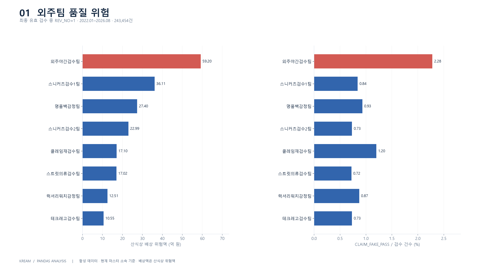
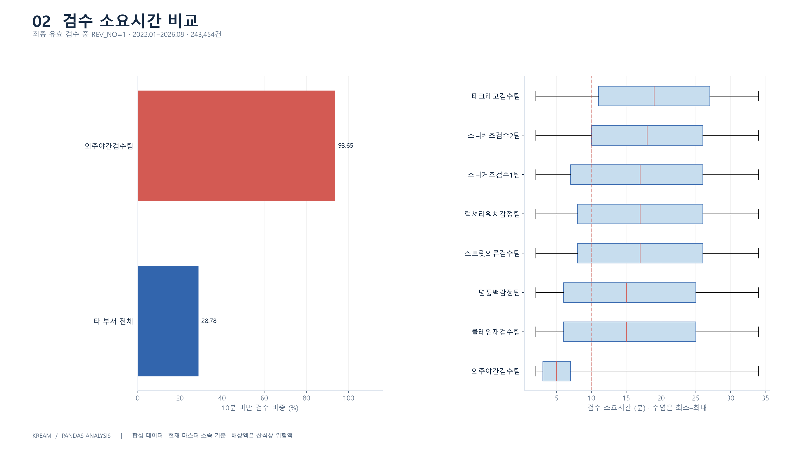
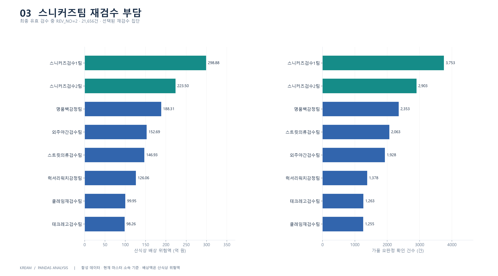
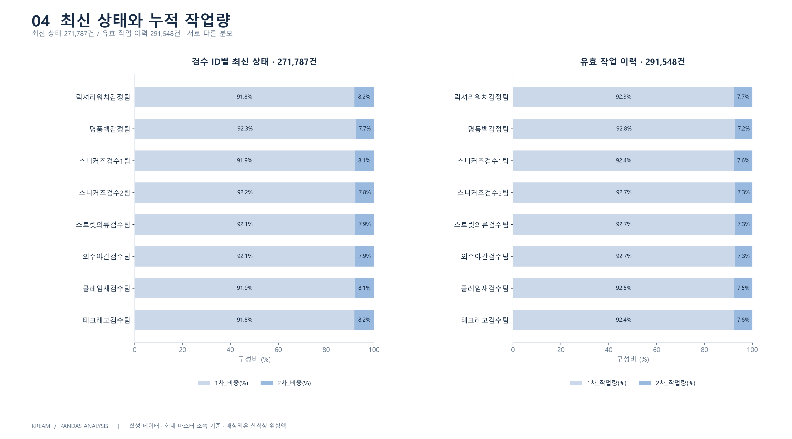
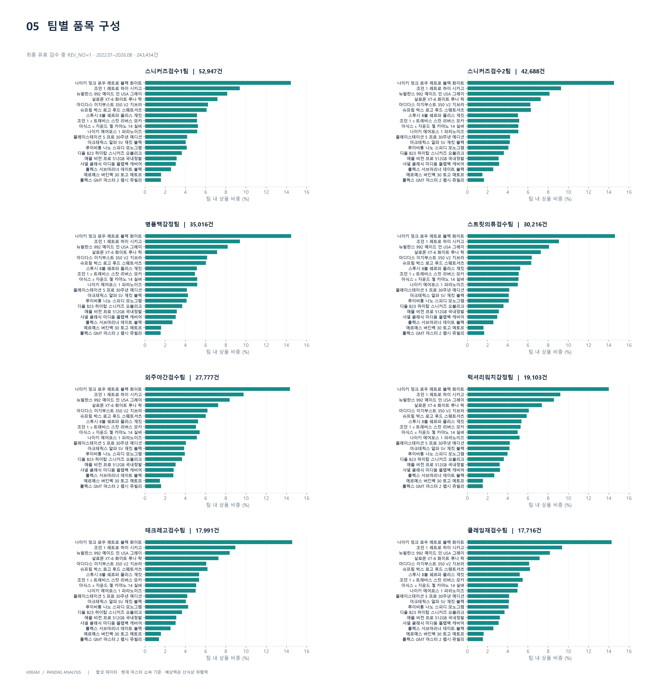
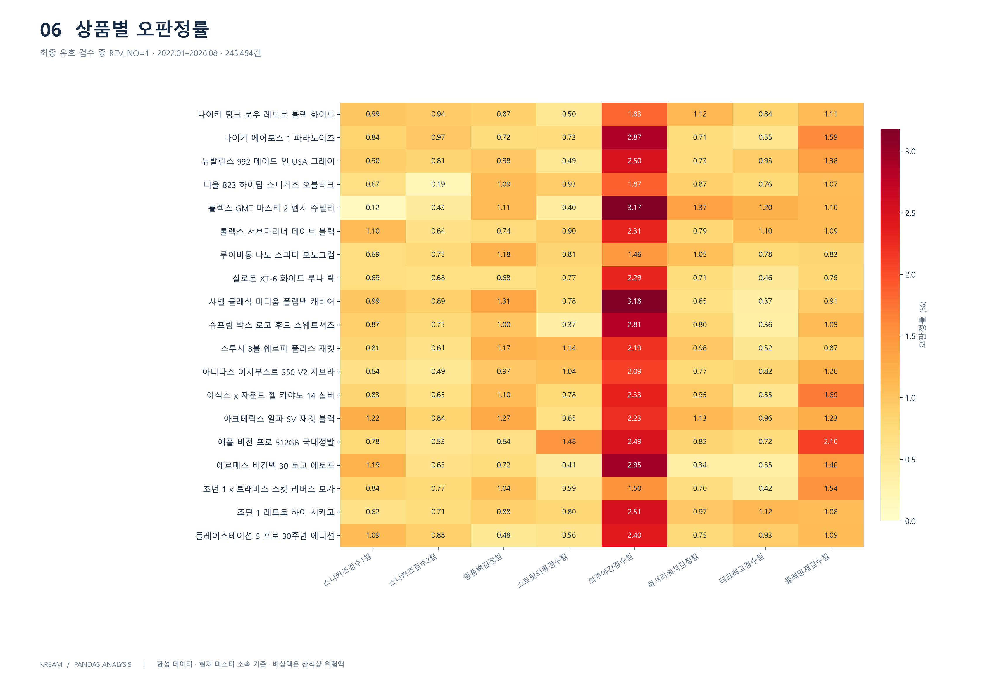
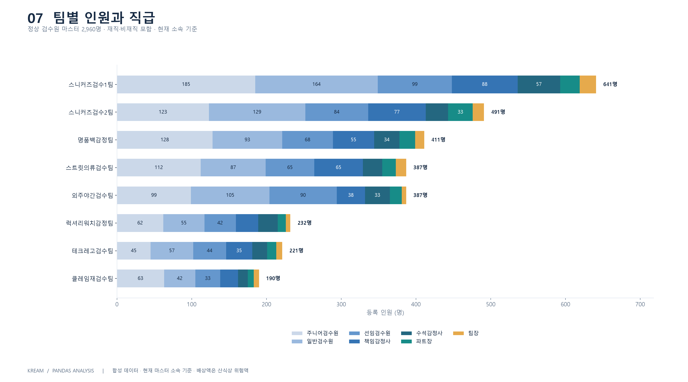
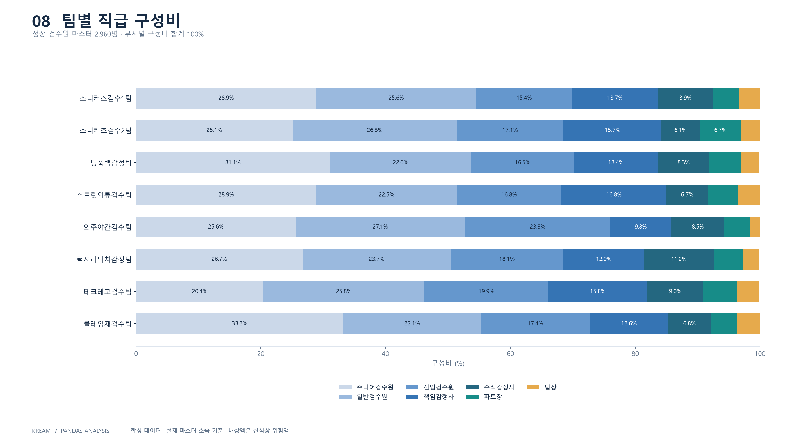
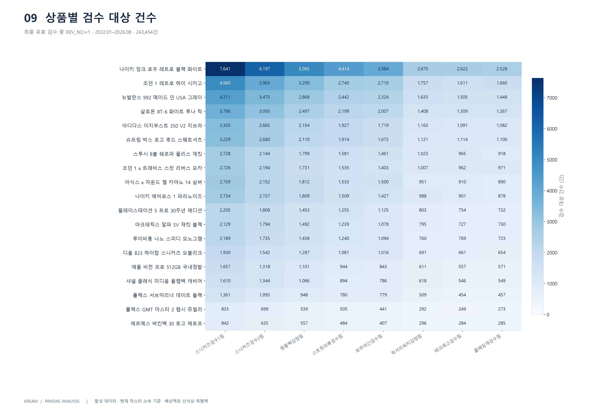
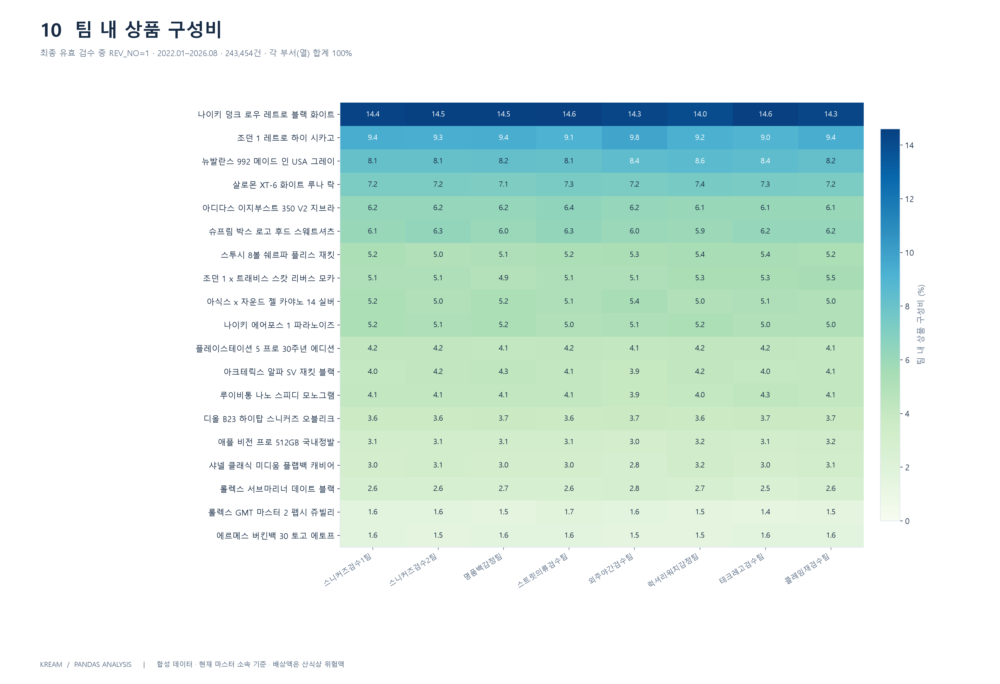

과제 · 01
외주팀 품질 위험
외주야간검수팀: 배상 위험액 59.20억 원, 오판정률 2.28%. 위험액은 실제 지급액이 아닙니다.

PNG 저장SVG 저장
최종 유효 검수 중 REV_NO=1 · 2022.01–2026.08 · 243,454건 과제 · 02
검수 소요시간 비교
10분 미만 비중: 외주야간검수팀 93.65%, 타 부서 전체 28.78%. 소요시간만으로 원인을 단정하지 않습니다.

PNG 저장SVG 저장
최종 유효 검수 중 REV_NO=1 · 2022.01–2026.08 · 243,454건 과제 · 03
스니커즈팀 재검수 부담
스니커즈검수1팀 298.88억 원, 2팀 223.50억 원. 재검수 대상으로 선택된 집단의 수치입니다.

과제 · 04
최신 상태와 누적 작업량
대상별 최신 상태와 실제 누적 작업은 분모가 다릅니다. 누적 작업에는 유효 이전 개정 작업을 포함합니다.

과제 · 05
팀별 품목 구성
각 팀에서 검수한 상품 비중을 동일 축으로 비교합니다. 모든 팀에서 19개 상품이 관측됩니다.

PNG 저장SVG 저장
최종 유효 검수 중 REV_NO=1 · 2022.01–2026.08 · 243,454건 부록 · 06
상품별 오판정률
셀 값은 상품·부서별 CLAIM_FAKE_PASS 건수 ÷ 해당 검수 건수 × 100입니다.

PNG 저장SVG 저장
최종 유효 검수 중 REV_NO=1 · 2022.01–2026.08 · 243,454건 부록 · 07
팀별 인원과 직급
검수원 마스터의 사번으로 집계합니다. 재직·비재직을 모두 포함하므로 가용 인력 수와 다릅니다.

부록 · 08
팀별 직급 구성비
직급별 인원을 팀 전체 등록 인원으로 나눈 비율입니다. 반올림으로 합계에 미세한 차이가 날 수 있습니다.

부록 · 09
상품별 검수 대상 건수
최초 개정 분석 대상 243,454건을 상품·부서로 나눕니다. 원자료의 중복 행을 합산하지 않습니다.

PNG 저장SVG 저장
최종 유효 검수 중 REV_NO=1 · 2022.01–2026.08 · 243,454건 부록 · 10
팀 내 상품 구성비
각 부서 열의 합계가 약 100%가 되도록 계산합니다. 상품별 전체 시장 점유율과는 다릅니다.

PNG 저장SVG 저장
최종 유효 검수 중 REV_NO=1 · 2022.01–2026.08 · 243,454건 · 각 부서(열) 합계 100%